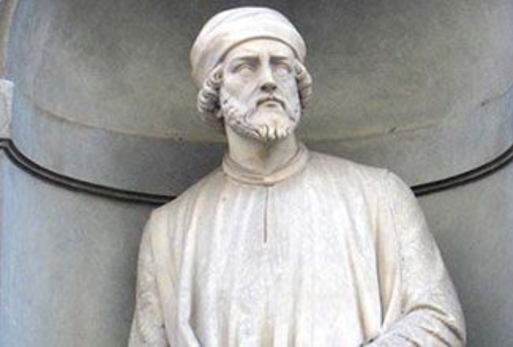

Famous Artists
Donatello
Source: Donatello.
theartstory.org(https://www.theartstory.org/artist/donatello/)
Donato di Niccolò di Betto Bardi, better known as Donatello, was an Italian sculptor in the
Renaissance period. He worked in many creative ways and produced many popular and unique
sculptures still popular today.
Auguste Rodin

Source: Auguste Rodin. The Thinker. 19th century.
terraingallery.org(https://terraingallery.org/aesthetic-realism/art-criticism/auguste-rodin/)
François Auguste René Rodin was a fundamental French sculptor, who was even considered to
be the founder of modern sculpture. He had a unique and incredible ability to mold,
shape, and craft complex and interesting sculptures in clay. Many of his sculptures are
still very popular today.